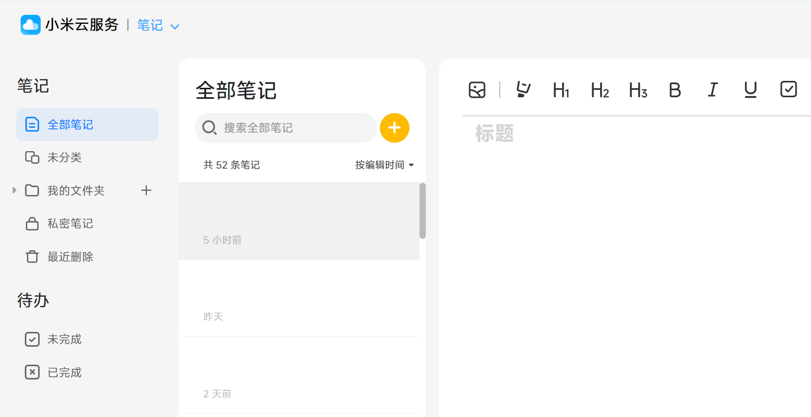
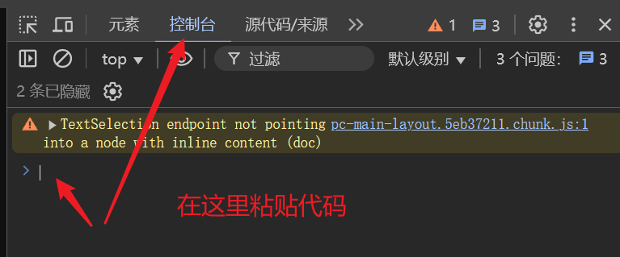
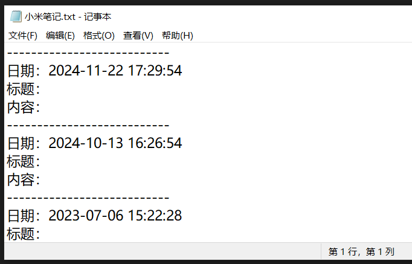

小米笔记批量导出
时间：2025年2月10日11:28:20
原教程来自知乎，我在 B 站搜不到，于是做个转发
知乎原文：https://www.zhihu.com/question/35329107/answer/2726573615
如何将手机里的小米笔记，一次性批量导出到电脑？
按以下步骤操作：
-
打开“小米云服务”官网：https://i.mi.com/
登录账号，进入笔记
（确认开启了笔记云同步，应该能看到手机的全部笔记） -
按“F12”，会打开浏览器的控制台工具
点击切换至“控制台”选项卡
（在这里鼠标单击可以输入代码和执行代码） -
复制下面的代码，粘贴代码，按回车键，开始执行代码
※ 注意：复制时可能会带有网站的复制文字水印，会代码报错
请复制到其他地方，删去多余的文字水印，再复制到浏览器中执行代码 -
等待代码执行完成
会自动抓取全部笔记，并显示在新页面上
并且会下载保存到本地“小米笔记.txt”

（小米云服务-笔记）

（浏览器-控制台工具-控制台）

（导出记事本-效果预览）
常见问题：
- 如果代码报错，请检查复制内容是否完整，是否删去了网站的文字水印
- 如果还是报错，请尝试换个浏览器，再次尝试
- 暂不支持笔记中的图片、待办等内容的抓取
- 如果需要修改笔记的显示顺序、是否下载，可在代码前面这里修改
// ————————代码开始————————
// 此处可修改笔记的显示顺序：0=正序（旧的在前），1=倒序（新的在前）
var orderType = 1;
// 此处可修改是否保存为txt文件：0=不保存，1=保存
var saveAsTxt = 1;
var text = "";
var txtContent = "";
var resultArray = [];
var Ajax = {
get: function (url, fn) {
var xhr = new XMLHttpRequest();
xhr.open("GET", url, false);
xhr.onreadystatechange = function () {
if (xhr.readyState == 4 && (xhr.status == 200 || xhr.status == 304)) {
fn.call(this, xhr.responseText);
}
};
xhr.send();
},
};
function sortRule(a, b) {
return orderType === 1
? b.date.getTime() - a.date.getTime()
: a.date.getTime() - b.date.getTime();
}
function nextPage(syncTag) {
var url =
"https://i.mi.com/note/full/page/?ts=" +
new Date().getTime() +
"&limit=200";
if (syncTag) {
url += "&syncTag=" + syncTag;
}
Ajax.get(url, function (r) {
var result = JSON.parse(r);
for (var i in result.data.entries) {
let obj = result.data.entries[i];
let detailUrl =
"https://i.mi.com/note/note/" + obj.id + "/?ts=" + new Date().getTime();
Ajax.get(detailUrl, function (dtl) {
var detailInfo = JSON.parse(dtl).data.entry;
var date = new Date();
date.setTime(obj.createDate);
var resultObj = {};
try {
resultObj.title = JSON.parse(detailInfo.extraInfo).title;
resultObj.title = resultObj.title ?? "无";
} catch (err) {}
resultObj.date = date;
resultObj.content = detailInfo.content;
resultArray.push(resultObj);
});
}
if (result.data.entries.length) {
nextPage(result.data.syncTag);
} else {
resultArray.sort(sortRule);
text += "<table>";
for (let j in resultArray) {
let resObj = resultArray[j];
text += "<tr class='mytr'><td class='mytd'>\n\n";
text += '<div class="card">';
text += "<div>" + dateFormat(resObj.date) + "</div>";
text += "<div style='line-height: 12px;'>-----------------------</div>";
text += "<div></div>";
text +=
'<div style="margin-left:0px;">标题：' + resObj.title + "</div>";
text +=
'<div style="margin-left:0px;">内容：' + resObj.content + "</div>";
text = text.replace(/[\n\r]/g, "<br/>");
text += "</div>";
text += "</td></tr>";
txtContent += "日期：" + dateFormat(resObj.date) + "\n";
txtContent += "标题：" + resObj.title + "\n";
txtContent += "内容：" + resObj.content + "\n";
txtContent += "---------------------------\n";
}
text += "</table>";
text += `<style>
.mytd{
padding:10px;
border-bottom: 1px solid #dedbdb;
}
.mytr{}
.card{
margin-top:30px;
}
table{}
</style>`;
var newWindow = window.open();
newWindow.document.write(text);
if (saveAsTxt === 1) {
downloadTxtFile(txtContent, "小米笔记.txt");
}
}
});
}
function dateFormat(date) {
return (
date.getFullYear() +
"-" +
(date.getMonth() + 1).toString().padStart(2, "0") +
"-" +
date.getDate().toString().padStart(2, "0") +
" " +
date.getHours().toString().padStart(2, "0") +
":" +
date.getMinutes().toString().padStart(2, "0") +
":" +
date.getSeconds().toString().padStart(2, "0")
);
}
function downloadTxtFile(content, filename) {
var blob = new Blob([content], { type: "text/plain" });
var a = document.createElement("a");
a.href = URL.createObjectURL(blob);
a.download = filename;
a.click();
URL.revokeObjectURL(a.href);
}
nextPage();
// ————————代码结束————————
最后感谢原作者的分享，记得给知乎原作者点个赞~